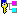

| BeMDI SDK |
| ActivateView | Activates a MDI view. | |
| AddChild | Hide AddChild. | |
| AddMDIView | Adds a new MDI view. | |
| AttachedToWindow | BeOS hook function | |
| BeginViewMove | Called when the user begins to move a MDI view. | |
| BeginViewResize | Called when the user begins to resize a MDI view. | |
| BringToFront | Brings a view to front. | |
| CMDIClientView | Constructor | |
| CMDIWindowFilter |  | Message filter for mouse messages. |
| CountMDIViews | Returns the number of MDI views inside this view. | |
| CountVisibleMDIViews | Returns the number of visible MDI views. | |
| CreateTitleView | Factory method for title tabs. | |
| DetachedFromWindow | BeOS hook function | |
| EnableMouseRedirect | Enable mouse redirect | |
| EndViewMove | Called when the user stops to move a MDI view. | |
| EndViewResize | Called when the user stops to resize a MDI view. | |
| FrameResized | BeOS hook function | |
| GetNextMDIView | Walk through the list of MDI views. | |
| GetNextVisibleMDIView | Walk through the list of visible MDI views. | |
| HideRestoreButton | Hides the restore button. | |
| HideScrollBar | Hides a scrollbar. | |
| HideView | Hides a MDI view. | |
| Internal_ViewFromPoint | Internal method | |
| MaximizeView | Maximizes a view. | |
| MessageReceived | BeOS hook function | |
| MinimizeView | Minimizes a view | |
| MouseRedirectEnabled | Returns true, if the mouse redirect filter is enabled. | |
| MoveViewBy | Moves a view. | |
| MoveViewTo | Moves a view. | |
| MoveViewTo | Moves a view. | |
| RemoveMDIView | Removes a MDI view. | |
| ResizeViewBy | Resizes a view. | |
| ResizeViewTo | Resizes a view. | |
| RestoreView | Restores the currenctly maximized view. | |
| SendToBack | Sends a view to back. | |
| ShowRestoreButton | Displays the restore button | |
| ShowScrollBar | Shows a scrollbar. | |
| ShowView | Displays a hidden MDI view. | |
| SomeViewMaximized | Returns true, if some MDI view is maximized. | |
| StackViews | Stack the views. | |
| TargetedByScrollView | BeOS hook function | |
| TileViews | Tiles the views either horizontal or vertical. | |
| UpdateDataRect | Update virtual size. | |
| UpdateScrollBars | Update scrollers. | |
| UpdateWindowTitle | Adds the MDI title to the window title | |
| ViewFromPoint | Returns the view which contains the specified point. | |
| WindowActivated | BeOS hook function | |
| activeView | Current active view. | |
| dataRect | Virtual size of this view (for scrolling). | |
| filter | Pointer to the filter which was attached to the window. | |
| mouseRedirect | True if mouse message redirection is enabled. | |
| originalWindowTitle | Window title before UpdateWindowTitle was called the first time. | |
| restoreButton | The restore button, which is shown right of the menu bar. | |
| restoreInfo | Information needed to restore the maximized view. | |
| restore_info | Contains all information needed to restore the maximized view. | |
| scrollView | The scroll view, which targets this view. | |
| ~CMDIClientView | Destructor |
A CMDIClientView contains all MDI views of an application. The MDI views and their title tabs are children of this view. Because this class is derived from CZOrderedViewManager it ensures that the clippling of its child views is correct.
A CMDIClientView normally is a direct child of a BScrollView scroll view. The MDI client view automatically hides the scrollbars, if they aren't needed. If the client view isnt' targeted by a scroll view, the user can still move the MDI views outside the visible area. Therefore you should either use the scrolling or implement your own way to get those views back.
MDI views can be minimized by a double-click on their title tab or by calling MinimizeView. Minimized views are simply hidden. In order to allow the user to get them back you must add a CMDIViewMenu sub-menu to your menu bar.
MDI views can also be maximized. If a MDI view is maximized the first child (ChildAt(0)) of the MDI view replaces the MDI client view in the view hierarchy. To restore the maximized view to its orginal size and position a button is displayed right of the key menubar of the parent window.
Like any CZOrderedView a MDI view maintains a double linked list to the views above and beneath itself. It also depends on the CZOrderedViewManager to update its clipping if needed. Therefore you shouldn't call any methods which change the position or size (like BView::MoveTo or BView::ResizeTo) directly. Instead use the methods of this class to modify the size or position of a MDI view.
A normal MDI view has a title tab, with allows the user to move the view around, maximize, minimize and close it. That title view is created, when the MDI view is added via the AddMDIView method. Don't use AddChild directly. All views added via AddMDIView must be derived from CMDIView.
When a CMDIClientView is attached to a window, it attaches a message filter to it. That is necessary, because BeOS doesn't know anything about the z-order of the views and directs the messages to the first view it finds that contains the mouse. The message filter redirects the message to the correct view.
| Last modified | Sun Sep 2 20:51:50 2001 |
| Derived from | CZOrderedViewManager | Declared in | MDIClientView.h |